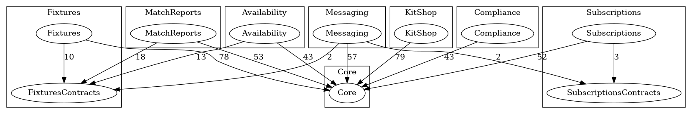

Core knows nothing about modules
The app is split in two.
Core (app/) holds what
every club has: organisations, users and roles,
teams, players, feature flags, the module registry
and the audit log.
Modules
(modules/{Name}/) hold everything a
club might not want.
The rule that makes the rest work: Core never imports a module class. Not in a controller, not in a seeder, not in a test. Modules depend on Core; Core depends on nothing but the framework. That is why a module folder can be deleted: nothing outside it mentions it by name.
Core still has to find the modules. It reads a list
of class names from
config/modules.php and asks each one
for its key, its dependencies, its service provider
and its seeder. A class name in a config file is
data, not a dependency.
config/modules.php'installed' => [
FixturesModule::class,
AvailabilityModule::class,
MatchReportsModule::class,
SubscriptionsModule::class,
KitShopModule::class,
ComplianceModule::class,
MessagingModule::class,
],Read the source: app/Modules/ModuleRegistry.php, app/Providers/ModulesServiceProvider.php
Installed is not enabled
Two different questions, answered in two different places. The team sheet above lets you try both.
| Installed | Enabled | |
|---|---|---|
| Means | The module's code is part of this deployment | This club can use it |
| Lives in | config/modules.php |
A Pennant flag,
module:{key}, scoped to
the organisation
|
| Changed by | A developer, in a commit | The super admin, from the platform dashboard |
| When it is off | No provider, routes, migrations, listeners or seeders | Routes return 404, the menu hides it, data stays put |
A disabled module answers 404, not
403: for that club it should look like
it does not exist. Every module route gets the
module:{key}
middleware from the base provider, so no module can
forget it. Switching a module off only flips the
flag, so turning it back on brings everything back.
Read the source: app/Modules/ModuleManager.php, app/Http/Middleware/EnsureModuleEnabled.php, app/Modules/ModuleServiceProvider.php
Contracts are public, everything else is private
Every module has the same shape. One folder,
Contracts/, is its public surface:
interfaces, read-only data objects and events that
other modules may use. The rest of the module is
private to it.
modules/Fixtures/
Contracts/ public: FixtureLookup, FixtureData, Events/FixtureScheduled
Actions/ Database/ Http/ Lookup/ Models/ Policies/ Queries/
Routes/web.php
Tests/ only run while the module is installed
FixturesModule.php key, name, hard and soft dependencies, seeder
FixturesServiceProvider.php binds FixtureLookup to its Eloquent implementation
Availability needs to know about fixtures, but it
never touches the
Fixture model. It type-hints
FixtureLookup and gets back
FixtureData objects. Fixtures can
change its tables, its model, even its storage, and
Availability will not notice.
The same thinking reaches the database.
availability_responses.fixture_id has
no foreign key: a constraint would tie
Availability's schema to Fixtures' table, which is
exactly the coupling the contract exists to avoid.
Module tables carry the module key as a prefix
(fixtures_fixtures,
kit_shop_orders) so ownership is
obvious.
Read the source: modules/Fixtures/Contracts/, modules/README.md
Deptrac turns the rules into a failing build
A convention that lives in a README gets broken on
the first busy Friday. Deptrac reads every class,
sorts it into a layer, and checks
every dependency (imports, type hints,
new, static calls, attributes) against
a ruleset. A dependency is allowed
only if its target layer is listed.
Each module gets two layers, one for its internals and one for its contracts:
deptrac.yaml- name: Availability
collectors:
- type: classLike
value: ^Modules\\Availability\\(?!Contracts\\).* # everything except Contracts
- name: AvailabilityContracts
collectors:
- type: classLike
value: ^Modules\\Availability\\Contracts\\.*And the ruleset says who each layer may use:
deptrac.yamlAvailability:
- Core
- Framework
- AvailabilityContracts
- FixturesContracts # its hard dependency's public surface, nothing more
Core:
- Framework # Core may not name a single module layer
Swap FixturesContracts for
Fixtures and everything still compiles
and runs. That one line is the boundary.
make deptrac also runs with
--fail-on-uncovered and
debug:unassigned, so a class that
belongs to no layer fails the build instead of
slipping through unchecked.
Deptrac cannot see everything. Pest arch tests cover
the rest: no raw
DB::table() queries (they skip the
tenancy scope), no queries built in controllers, and
no services resolved by string key.
Read the source: deptrac.yaml, tests/Arch/ModulesTest.php
Hard and soft dependencies
Modules declare their dependencies by key, never by class, so a definition never imports another module.
| Hard | Soft | |
|---|---|---|
| Example | Availability needs Fixtures | Kit Shop uses Subscriptions when it is there |
| Declared as |
hardDependencies():
['fixtures']
|
softDependencies():
['subscriptions']
|
| Enabling | Blocked until the dependency is on for that club | Never blocked |
| Uninstalling the other one | The app refuses to boot and names both modules | Keeps working, with a sensible default |
| How the code talks |
Through the dependency's
Contracts/
|
Through a Core capability, or by listening to events |
Soft dependency through a capability
Kit Shop only sells to players who are paid up, but it must not import Subscriptions. So the question lives in Core, as an interface with a null answer that Core binds by default: everyone is paid up.
app/Capabilities/MembershipStatus.phpinterface MembershipStatus
{
public function tracksMembership(): bool;
public function isPaidUp(int $playerId): bool;
}While Subscriptions is installed, its provider takes over the binding. On every resolve it checks whether the current club has Subscriptions switched on, and falls back to the null answer if not. Kit Shop asks the same question either way and never learns who answered.
modules/Subscriptions/SubscriptionsServiceProvider.php$this->app->bind(MembershipStatus::class, function ($app): MembershipStatus {
$organisation = $app->make(CurrentOrganisation::class)->get();
return $organisation !== null && $app->make(ModuleManager::class)->isEnabled($organisation, 'subscriptions')
? $app->make(SubscriptionsMembershipStatus::class)
: new NullMembershipStatus;
});Soft dependency through events
Messaging posts an announcement when a fixture is
scheduled or a payment goes overdue. Fixtures and
Subscriptions publish events from their
Contracts/ and have no idea anyone is
listening. Messaging subscribes only to modules that
are installed, and its listeners do nothing for
clubs that have Messaging switched off.
modules/Messaging/MessagingServiceProvider.phpif ($installed->has('fixtures')) {
Event::listen(FixtureScheduled::class, AnnounceFixture::class);
}
if ($installed->has('subscriptions')) {
Event::listen(PaymentOverdue::class, RemindOverduePayment::class);
}Read the source: app/Capabilities/NullMembershipStatus.php, modules/KitShop/Actions/PlaceOrder.php, modules/Messaging/Listeners/PostsForOrganisation.php
The module graph
make graph asks Deptrac to draw every
dependency it found between layers. It is drawn from
the code, not by hand, so it cannot drift.

What to look for:
-
Every arrow into another module lands on its
Contractsbox, never its internals. - Core has arrows in and none out.
-
Kit Shop has no arrow to Subscriptions at all.
Its soft dependency goes through
MembershipStatusin Core, so the graph shows it as independent, which it is. - Availability and Match Reports sit side by side and cannot see each other.
The same boundaries in Vue
Each module's frontend lives in
resources/js/modules/{key}/. Its
index.ts is the only file other code
may import; pages and components are private. The
menu is built from whichever
index.ts files exist, filtered by the
modules the club has enabled, using
import.meta.glob so that Core's code
never names a module.
resources/js/modules/compliance/index.tsexport default defineModule({
key: 'compliance',
navigation: [
{ title: 'Compliance', href: compliance.index(), icon: ShieldCheck },
],
});
eslint-plugin-boundaries enforces it. A
module may import shared code, its own files and
another module's index.ts. Wayfinder's
generated route and controller helpers count as part
of the module that owns them, so they are no back
door. ESLint runs this one rule only; Oxlint handles
everything else.
Read the source: eslint.config.js, resources/js/modules/registry.ts
Proving a module is detachable
"Can be deleted without breaking anything" is a
claim, so the repository tests it.
make uninstall-check MODULE=Messaging
copies the project to a temporary folder, removes
the module from config/modules.php,
deletes its PHP and Vue folders, and runs every gate
against what is left: the full Pest suite, Deptrac,
ESLint, the type check and the frontend tests.
$ make uninstall-check MODULE=Messaging
==> Uninstalling Messaging: removing it from config/modules.php
==> Deleting modules/Messaging and resources/js/modules/messaging
==> Pest: full suite
==> Deptrac: module boundaries
==> Frontend: module boundaries, type check and unit tests
Messaging uninstalled and deleted: the rest of the application still passes every gate.CI runs it for every module that can be removed on its own. Fixtures cannot: Availability and Match Reports depend on it, and the check says so up front.
Running it the first time found a real leak: Kit Shop's tests assumed Subscriptions existed. A test that needs another module now skips when that module is missing, and the module's own tests keep running.
Read the source: bin/uninstall-check, .github/workflows/ci.yml, tests/Pest.php
Ready to build one? Add a module to this repository.